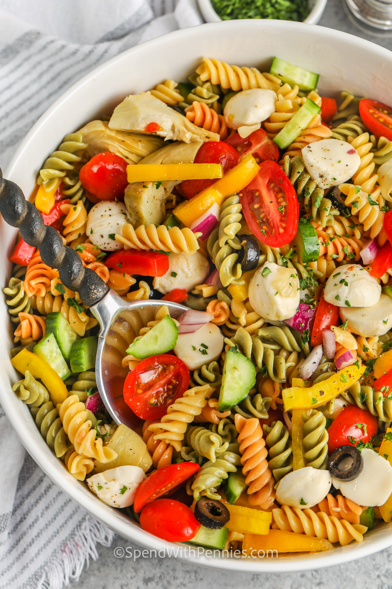

Pasta Salad

A simple mixture of fresh veggies and rotini (or any pasta shape) are tossed
with a zesty dressing for a fast and fresh side or main dish.
Ingredients:
- Pasta – Pick your pasta! Medium pasta shapes work well for this recipe. In place of rotini
pasta use penne or bowties.
- Vegetables – Go for a combination of colors and textures for some crunch. Cherry
tomatoes, cucumbers, red peppers, and red or green onions are favorites.
- Cheese/Meat– Add some salami, pepperoni, diced ham, or other cured meats. Bocconcini
can be swapped for cubed mozzarella.
- Bold Flavors– You’ll want to add something with some bold flavor to the salad. Olives,
pickles, bacon bits, sundried tomatoes, artichokes, bold cheeses, or a scoop of pesto or
tapenade all work well.
Steps:
- Cook Pasta: Cook the pasta in a large pot of salted water. Drain well and rinse under cold water (per the recipe below).
- Chop Ingredients: While the pasta is cooking, chop the remaining ingredients and place in a large bowl.
- Combine Toss the pasta and veggies with the dressing. Chill up to 2 hours before serving.